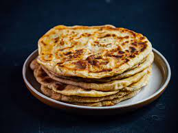

Paratha

Description
an unleavened Nepali wheat bread that is usually fried on a griddle
Ingredients
Potatoes aloo
Ghee or oil
Green chilies (finely chopped)
Fresh coriander leaves (cilantro) (chopped)
Red chili powder
Red chili powder/Cumin powder/Garam masala
Ginger (grated)
Lemon juice
butter
Steps
Boil and mash the potatoes, then mix them with chopped green chilies, coriander leaves, spices, and lemon juice.
Combine wheat flour, water, and a pinch of salt to form a smooth dough. Divide it into small balls.
Roll each ball, stuff with the potato mixture, and seal. Roll it out into a flat disc.
Cook the paratha on a hot griddle with ghee or oil until golden brown on both sides. Serve hot with butter.